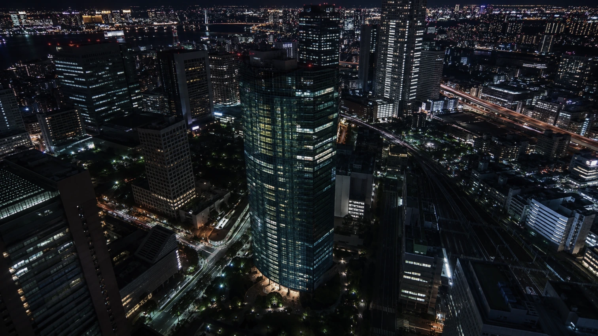
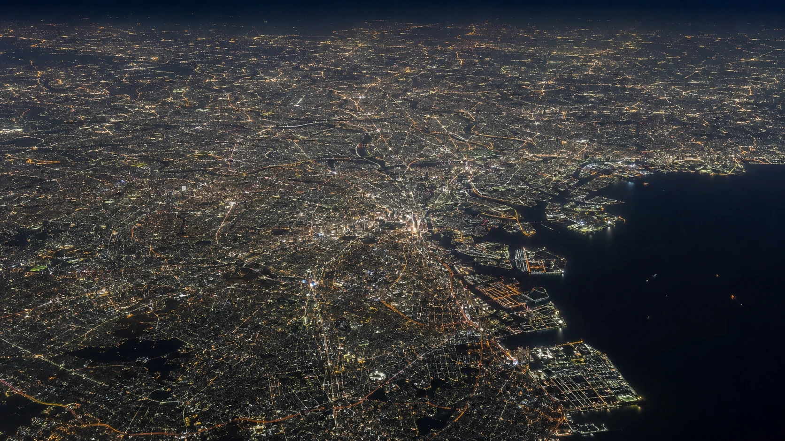
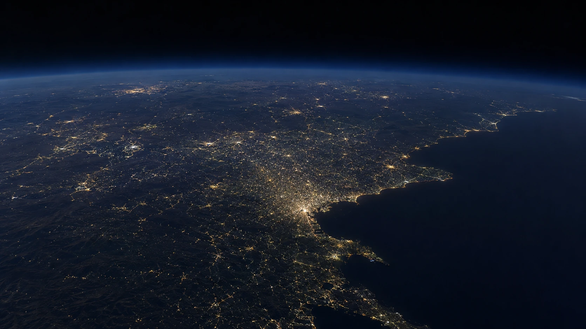
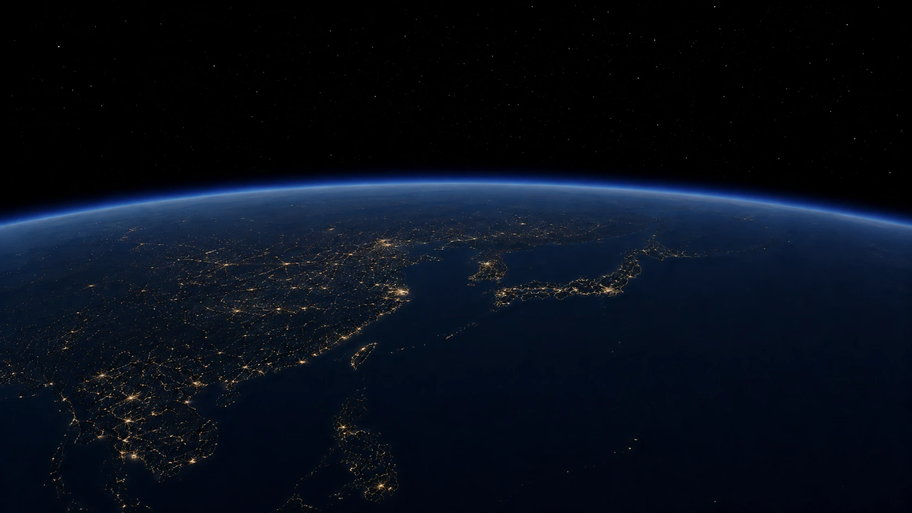
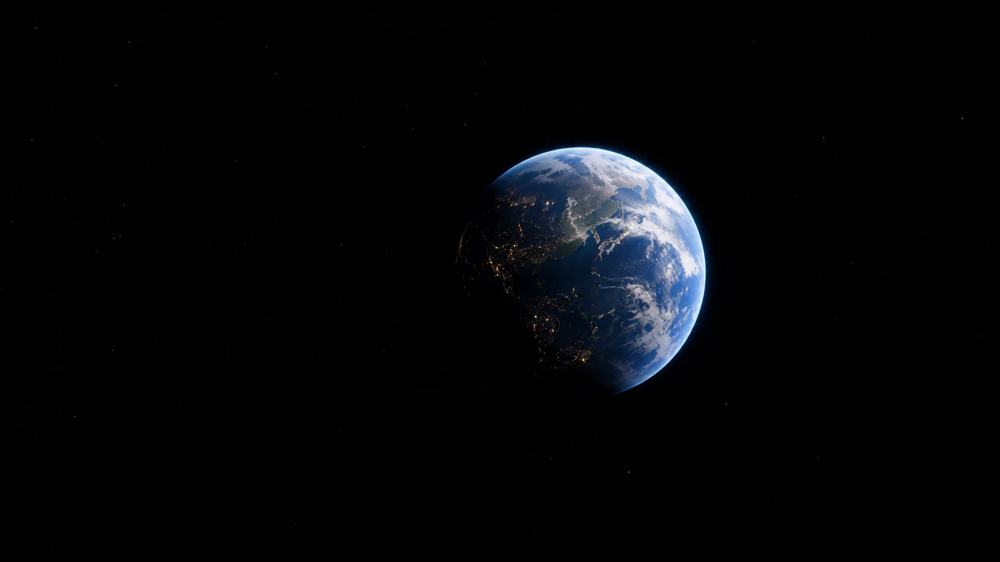
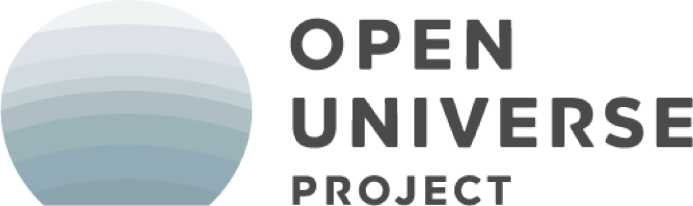
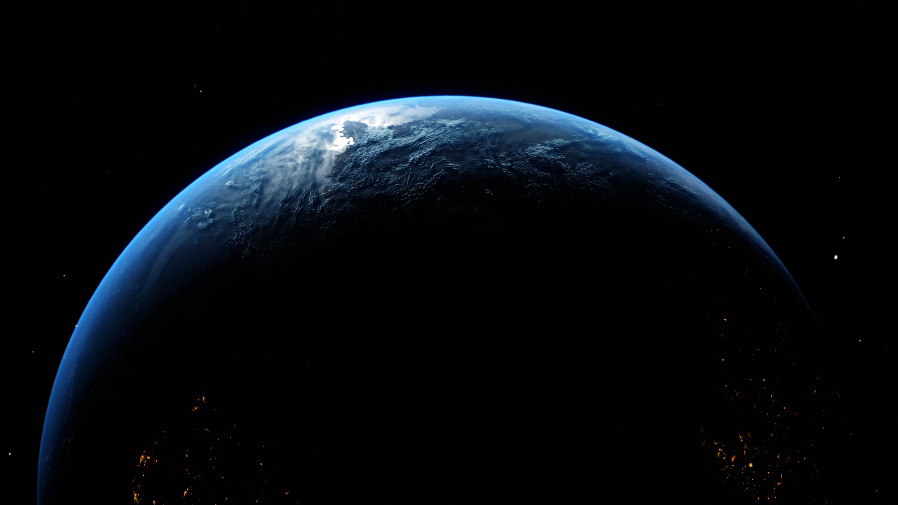

- 宇宙港と周辺のまちづくり
- 宇宙事業への参入支援
- 教育プログラム開発
- 宇宙人財育成の仕組みづくり
- 宇宙関連イベント運営・主催
Role in the EARTH SIDE


"Realizing people's dreams and challenges in the era of space tourism."
地上から約
00km
"JTB's space business begins on the ground."

地上から約
10km
"The Earth is not yet blue."
飛行機が飛ぶ高さ

地上から約
25km
"Space tourism by balloon is close to reality."
成層圏

地上から約
100km
"Welcome to outer space."
国際航空連盟（FAI）などが定める基準では、高度100kmの「カーマン・ライン」が空と宇宙の境界とされています

地上から約
400km
"Reached the International Space Station."
平均約400km（約400〜420km）円軌道（高度330～460kmの間で運用可能）※JAXA 有人宇宙技術部門による
地上から約
38万km
"Reached the lunar surface."
近地点：約35万7,000km 遠地点：約40万6,000km ※国立天文台(NAOJ)による
JTB × SPACE BUSINESS
2045年
宇宙旅行が“あたりまえ”になった世界。
宇宙で学び、働き、暮らす。
そこには、新しい文化や社会が生まれていきます。
JTBは、地球で培った交流創造の力で、
人々の想いや挑戦を宇宙へ広げます。
目指すのは、地球と宇宙をつなぎ、
新しい「交流」をつくることです。
Role in the EARTH SIDE
Role in the CONNECT
Role in the SPACE SIDE
業務領域
01
「宇宙」をテーマに、地域の新しい可能性をひらく。
宇宙港や宇宙関連施設、宇宙に取り組む地域を起点に、JTBが全国各地で培ってきた地域とのつながりやエリア開発の知見を活かし、観光、教育、産業を組み合わせ、宇宙をテーマにした地域振興へとつなげていきます。
想定領域：宇宙港・周辺地域開発／観光・交流／地域産業創出／エリアマネジメント
02
企業・地域・人をつなぎ、新しい宇宙ビジネスを生み出す。
様々な宇宙関連企業とのアライアンス、協業、人財交流を通じてお客様課題を解決するとともに、宇宙に挑戦する様々な企業や地域、技術、人財をつなぎ、新たな共創やビジネスが生まれる機会を創出します。
想定領域：企業間共創／ビジネスマッチング／国内外視察／MICE・イベント／宇宙ビジネス参入支援
03
宇宙を、次世代の学びと人財育成につなげる。
宇宙には、子どもたちの好奇心を引き出し、未来を考えるきっかけとなる様々なテーマがあります。学校や企業と宇宙の専門家をつなぎ、探究・STEAM教育から社会人の学びまで、宇宙教育のすそ野を広げていきます。
想定領域：探究・STEAM教育／学校向けプログラム／企業研修・リスキリング／宇宙人財育成
04
宇宙と、まだ出会っていないものをつなぐ。
宇宙ビジネスは、これまで直接宇宙とは結びついてこなかった様々な分野にも、進出できるチャンスがあります。
食、スポーツ、エンターテインメント、ファッション、金融、文化など・・・
JTBは、異なる業界、企業、アイデアをつなぎ、これまでにない宇宙ビジネスを皆さまと一緒に生み出していきます。
想定領域：新規事業開発／PoC・実証／異業種共創／宇宙×地上サービス
お知らせ
JTB×宇宙のホームページを公開しました。
TeNQ
【福島県】福島スペースカンファレンスに協賛しました。
【北海道】HOKKAIDO SPACE SUMMIT SAPPORO LINK 2026に参加し、SESSION02「宇宙利活用・周辺産業セッション」に登壇しました。
【和歌山県】カイロス3号機のロケット打上げ応援見学会の当日の運営をしました。
【神奈川県】神奈川宇宙サミットに出展・登壇しました。
JTB宇宙事業開発グループが発足しました。
プロジェクト

株式会社JTBは、気球での宇宙遊覧の実現を目指す株式会社岩谷技研が主催する「OPEN UNIVERSE PROJECT」に共創パートナーとして参画しています。
プロジェクトの詳細はこちら
宇宙交流時代に人々の想いや挑戦を実現する
宇宙との関わり方は、ロケットや衛星だけではありません。地域新興、異業種参入、教育、人財育成など、さまざまな可能性が広がっています。JTBは、地域、企業、学校そしてそこで活動する人々をつなぎ、宇宙から生まれる新しい可能性を、皆さまと共につくっていきます。
お問い合わせはこちら